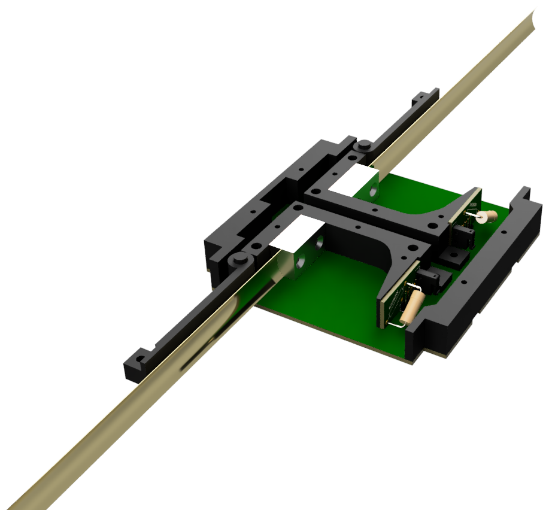

CubeDesign 2026Escola Politécnica · USP
Hermes · TT&C and OBC
Communication and on-board computer

Radio link
LoRa module at 433 MHz, half-duplex, for both uplink and downlink. 24.9 dB margin to a QFH ground-station antenna.
Antenna
Two λ/4 monopoles phased as a 17.3 cm dipole, so precise pointing is not needed.
Deployment mechanism
A steel tape-spring antenna stays coiled in a 100 × 100 × 16 mm box. A resistive wire melts the Dyneema restraint to release it.
On-board computer · STM32L476RG · mission states
IDLETRANSMITDEPLOYDETUMBLINGMISSION
Housekeeping reads BME280 temperature, MAX17048 battery charge, INA3221 currents and DS3231 time, and sends them down as telemetry.